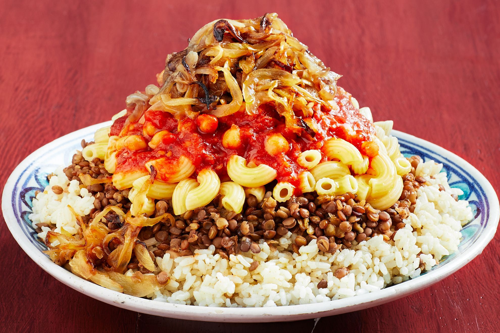
Koshari
A mix of rice, lentils, and pasta with tomato sauce.
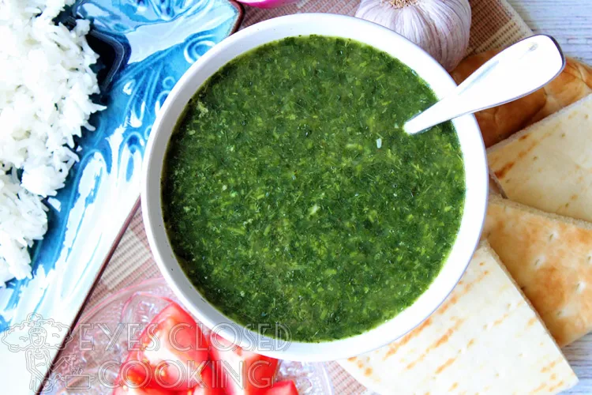
Molokhia
A green soup made from jute leaves, served with chicken.
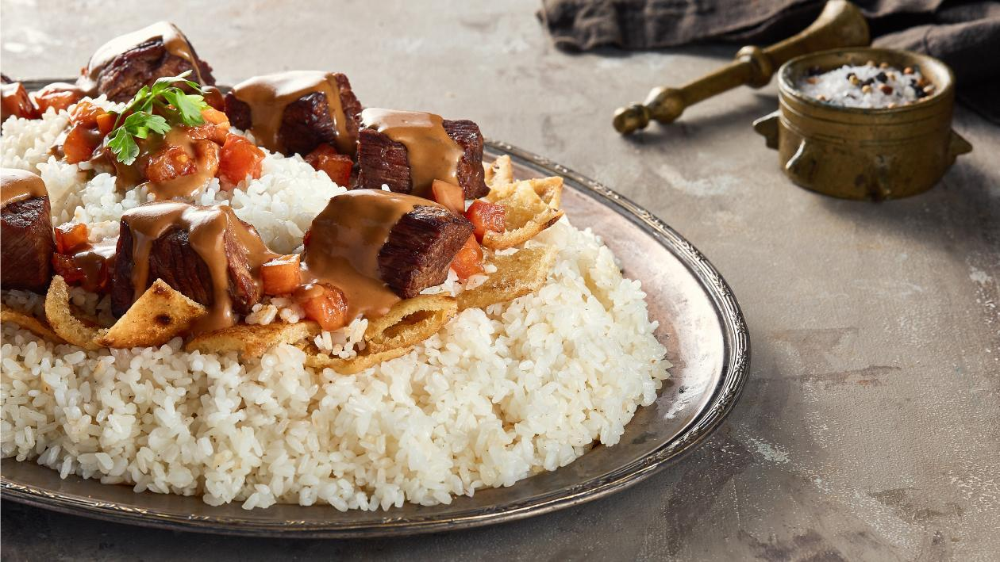
Fattah
Rice and bread with meat and garlic vinegar sauce.
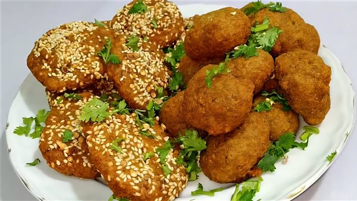
Taameya
Egyptian falafel made from crushed fava beans.
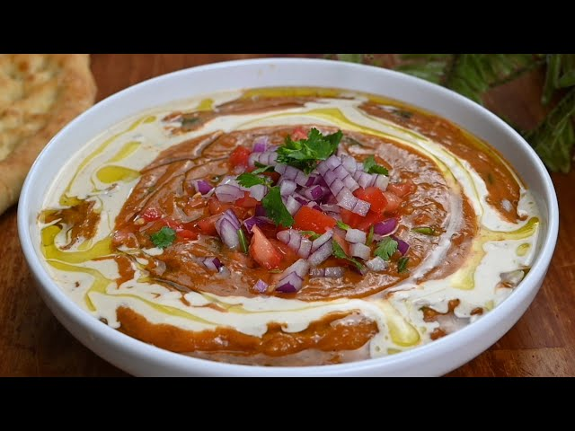
Ful Medames
Slow-cooked fava beans, the standard Egyptian breakfast.
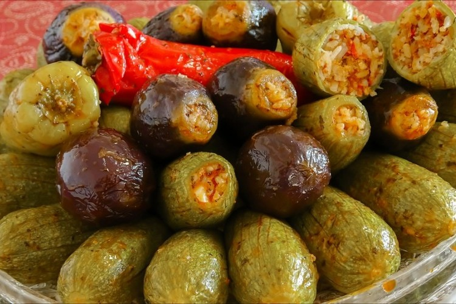
Mahshi
Vegetables stuffed with a herb-flavored rice mix.
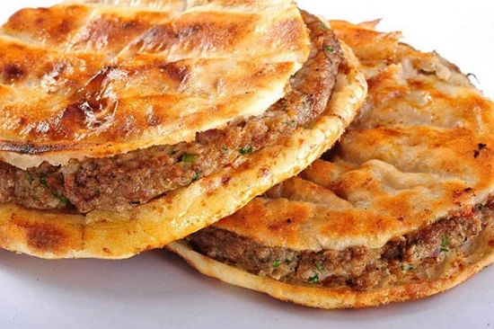
Hawawshi
Spiced minced meat baked inside a loaf of pita bread.
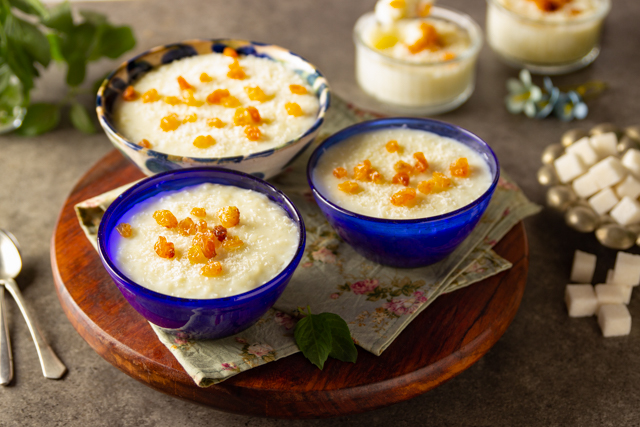
Roz Bel Laban
Creamy Egyptian rice pudding with vanilla and nuts.
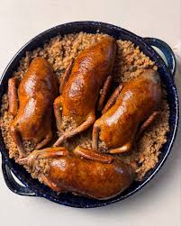
Hamam Mahshi
Pigeon stuffed with seasoned cracked wheat (Freek).

Mesakaa
Fried eggplant and peppers baked in a savory garlic tomato sauce.
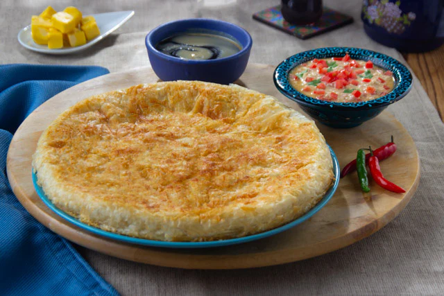
Fiteer Meshaltet
Layered flaky pastry served with white honey, black honey, cheese, or molasses.
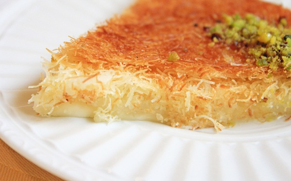
Kunafa
A golden, crunchy shredded pastry filled with cream or cheese and syrup.